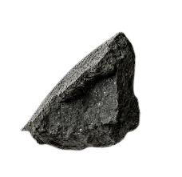
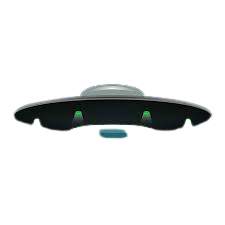

El planeta Tierra es el tercer planeta desde el Sol y el más grande de los planetas terrestres. A diferencia de los otros planetas en el sistema solar que llevan el nombre de las deidades clásicas del nombre de la Tierra en inglés(Earth) proviene de la palabra anglosajona erda que significa tierra o suelo. La Tierra se formó hace aproximadamente 4,54 billón años y es el único planeta conocido para sustentar la vida.
| Nombre | Diámetro ecuatorial | Temperatura | superficia |
|---|---|---|---|
| Marte | 6,792 km | -87 to -5 °C | |
| Venus | 12,104 km | 462 °C |